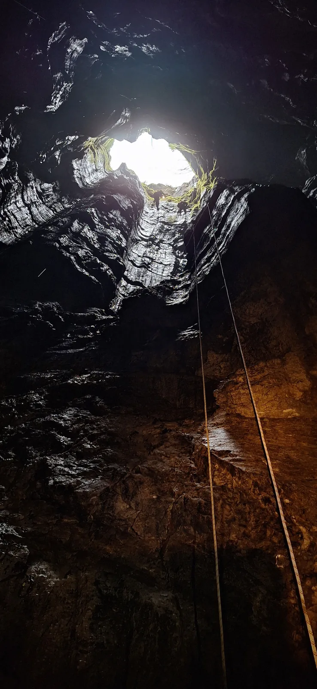

Camino de Studena
U duhu speleologije, koja neefikasnost u količini opreme nadoknađuje voljom za tegljenjem, ponijeli smo i veliki lonac za varivo do parkinga. Nije lonac kriv, ali mogli bi biti masivni plamenik i one silne litre vina…

Studena: mjesto za prve spuštancije, druge rođendane i treće pokušaje
29.-30. ožujka 2025.
Napisala: Petra Jagodić
Fotografije: Dragana, Ines, Jele, Petra i Tomislav
Postoje neka mjesta na ovom svijetu koja imaju jedinstvenu dušu i energiju. Sudeći prema tekstovima izvještaja i pjesama koje je Studena inspirirala, reklo bi se da je ona jedno od njih, a u to su se imali prilike uvjeriti i ovogodišnji školarci SOV-a i SU Estavele iz Kastva.
Četvrti teren 55. speleo škole započeo je, kao i inače, okupljanjem u Cugu no o tome vam neću puno pisati. Osim što već znate kako izgledaju pospana velebitaška subotnja jutra, ovome i nisam prisustvovala nego sam se s ostatkom ekipe našla na parkingu na Studeni. Po dolasku u kamp, neki su jednostavno bili sretni da mogu spustiti tone stvari koje su donijeli i pozdraviti prvu smjenu koja je stigla dan ranije. Drugi, iskusni i pametniji (ili smo bar tako tada mislili) znali su što slijedi pa su se bez oklijevanja prvi bacili u potragu za ravnim mjestom za bivak. No ni to nas nije spasilo od toga da nam bivak bude na pola puta do Rijeke. Tko bi rekao da je krški teren tako grbav i pun kamenja…
Nakon podizanja bivka, slijedi okupljanje oko već dobro nam znanog Velebitaškog stola, a onda se bacamo na posao. Par rundi dogovora i pregovora i odluka je pala: Estavela ide na stijenu, a mi ćemo, podijeljeni u dvije grupe po 7 školaraca, odmah u jame. Svakome je dodijeljen njegov instruktor i tako smo se zajedno uputili prema ulazima. Uzbuđenje (ili strah, kako kome…) je raslo na očigled - ovo će biti naša prva jama! Nismo tada imali pojma što znači 60 ili 600 metara vertikale, a spominjala su se i neka suženja…
Moja je grupa kao prvi zadatak dobila Malu jamu. Spretni i nabrijani Luka i Sanja krenuli su prvi. Odmah nakon njih, Olga i moja, nešto manje spretna i nabrijana, malenkost. Nakon nas Teo i Stjepko, pa ostali. Metar po metar, sidrište po sidrište i ulaznu vertikalu smo savladali bez većih problema, uz zadnje podsjetnike i budno oko naših instruktora. Mogla bi čak reći da je bilo i zabavno!
Iako Mala jama ima špiljski izlaz na drugu stranu, to ne znači da će nam dalje biti išta lakše. Odmah nakon vertikale dočekalo nas je to famozno suženje ne-baš-širom raširenih ruku. Luka i Sanja su skliznuli kroz njega kao prvi gutljaj hladnog piva niz grlo nakon vrućeg ljetnog dana. Vrlo smo brzo ostali sami: suženje, ja i pola Olge koja mi je objašnjavala koncept puzanja guzicom po stropu (što???) i istovremeno demonstrirala kako da prođem kroz “ključanicu”. Gledala sam u to suženje ispred sebe sve dok me moj neispavani želudac nije počeo podsjećati na to da ne volim uske prostore, a pogotovo one pod zemljom. Bilo je vrijeme da krenem jer su svakim trenutkom leptirići sve više nalikovali stršljenima. Preokrenula sam se na trbuh, ubacila noge u ključanicu, našla uporište za desnu nogu, odgurnula se rukama i… stala. Nakon još par pokušaja, izlaženja i ponovnog ulaženja u ključanicu, počela sam se osjećati kao klinka u autoškoli koja ne zna parkirati u rikverc. Smijeh na vlastiti račun potjerao je kukce iz trbuha i uz novu motivaciju izmigoljila sam na drugu stranu. Zapravo uopće nije bilo tako strašno! U tom pobjedničkom osjećaju objeručke me podržala i Olga koja me je uvjeravala da je ovo najgore što će biti i da se u praksi, u drugim objektima, ne ide često u suženja koja su puno duža i/ili uža od ovoga. Tek ću kasnije saznati da mi je lagala, ali baš zato zaslužuje 5+ iz pedagogije!
Ostavivši najgore iza sebe (i ne, pri tome ne mislim na Tea i Stjepka koje smo zadnji put čuli kako silaze sa špage s druge strane suženja) ostatak jame smo “pretrčali” s guštom i na površini našli mjesto s dobrim pogledom da odmorimo i pričekamo ostatak grupe. Prošle su tako mnoge minute, ako ne i sati, a nikog više nismo vidjeli da izlazi iz Male jame. Iako smo se malo zabrinuli, bio je red na nas da uđemo u Dvojamu pa smo tako sudbinu naših kolega doznali tek kasnije. Ne bi bilo ni upola tako zanimljivo da vam ja sad opisujem kako je Stjepko zapeo u suženju, ali svakako preporučam da mu jednom prilikom platite pivu i poslušate uživo kako se ponovno rodio (na zadak).
Ne znam je li i drugima bilo slično, ali nakon odrađene prve jame, sve se ostalo činilo lakšim. Ostatak poslijepodneva prošao je u nekoj magli spravica, vertikala i kiše. Dok su se tamo negdje daleko, kao na drugom kraju svijeta, odvijali Stjepkov (pre)porod i Anina dramatična borba same sa sobom, postojale smo samo ja, (mokra i skliska) stijena i ono što mi svjetlost moje naglavne lampe dozvoljava da vidim.
Večer me pronašla umornu, zadovoljnu i vrlo gladnu. Sva sreća pa su Feru na vrijeme oslobodili instruktorskih dužnosti kako bi kacigu zamijenio kuharskom kapicom i pripremio toplo varivo koje nas je dočekalo nakon vježbi. Priča i pjesma uz vatru nastavili su se do sitnih sati u ugodnom društvu kolega iz Estavele. Nije nas obeshrabrio niti jak vjetar koji je odnio prvo jednu, pa i drugu ceradu nad nama, a bogme niti vedro zvjezdano nebo iz kojeg je ipak nekako uspjela padati kiša.
Drugi dan počeo je nešto kasnije nego obično. Uz to što nam je Edo poklonio jedan sat sna kojeg nam je ukrao prelazak na ljetno računanje vremena, naučila sam i da zvuk iz kampa baš i ne dopire na pola puta do Rijeke. Osim kad Edo prozove baš tebe jer si eto malo zaspao… Uvlačenje u bivak oko pola 5 ujutro je nezgodno ako se misliš naspavati, ali gotovo je sigurno da si ujutro odjeven još od sinoć pa se brzinom munje možeš nacrtati na doručku. Uz velebitaški stol i ostatke ostataka kave saznali smo da je plan za danas nešto ležerniji nego jučer.
Za početak, udobno smo se svi razmjestili po glonđama ispod velike stijene da nam Luka demonstrira opremanje jama i tehničko penjanje. Puno je tu bilo informacija o raznim uzlovima, vrstama sidrišta, cijeloj abecedi pločica i sidrišnim vijcima koje moj pomalo mamuran mozak nije baš skroz uspio apsorbirati. Pogotovo zato što je jedina stvar koja mi je zapravo prolazila kroz glavu dok sam ga gledala bila “wow, ovaj ples na stijeni izgleda tako lako kad ga izvodi netko tko zna”. No vrlo je brzo došao red i na nas. Od viška glava ne boli pa smo se još malo “vozili po špagi”, usavršavali tehnike prelaska međusidrišta, uzlova i prečnica, a sve u nadi da će i naše dvije lijeve noge jednog dana znati zaplesati barem kolo, ako već ne profinjeni postavljački valcer.
Svemu lijepom dođe kraj, pa tako i našem vikendu na Studeni koja je u nedjelju konačno pokazala svoje najsjajnije lice i počastila nas toplim sunčevim zrakama. Nakon rušenja bivka, koje se nekim čudom svaki put čini duže nego nam je trebalo da ga postavimo, i posljednje rošade po autima, Stjepkov se auto ranije zaputio prema doma jer ipak treba voziti skroz do Osijeka. U duhu speleologije, koja neefikasnost u količini opreme nadoknađuje voljom za tegljenjem, ponijeli smo i veliki lonac za varivo do parkinga. Nije lonac kriv, ali mogli bi biti masivni plamenik i one silne litre vina koje smo također nosili u njemu, za naš Camino de Studena i brojne usputne pauze za molitvu, psovanje, disanje. Sreća kad smo ugledali auto na parkingu bila je velika, ali i kratkotrajna jer smo se sjetili da to znači povratak u stvarni svijet. Nakon igre speleotetrisa da se potrpamo u auto, a da pri tome nitko i ništa ne ostane viriti kroz prozor, i pokojeg kruga viška oko rotora u Rijeci ukazao se pred nama autoput za Zagreb.
Zbogom Studeno, bilo nam je posebno. Vidimo se opet!